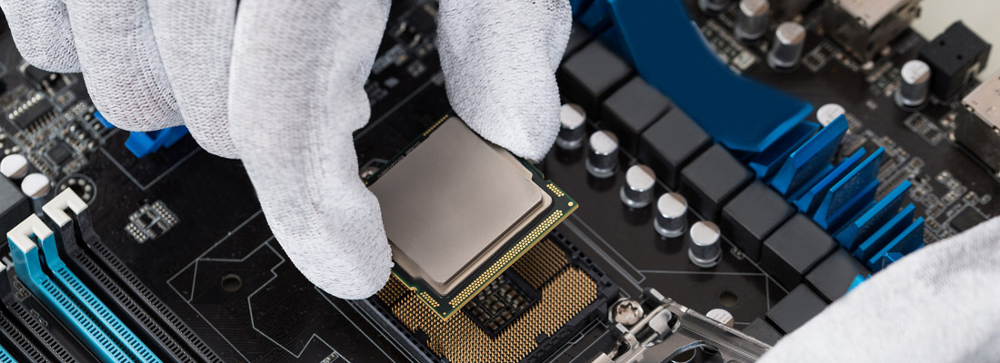

Nous vous accompagnons
Vous serez en contact avec votre commercial attitré qui vous suivra tout au long de notre collaboration. De même, vous aurez votre technicien référent, pour un meilleur suivi client. C’est pourquoi nous proposons des contrats de maintenance informatique adaptés aux besoins particuliers de chaque client :
Maintenance informatique mensuelle : Une, deux, ou quatre visites d’1/2 journée par mois dans vos locaux
Maintenance informatique forfaitaire : pour maîtriser votre budget FUTUR TECH vous garantit le bon fonctionnement de votre installation et une assistance permanente.
Dans les moments les plus critiques, vous pourrez également compter sur FUTUR TECH pour trouver une solution d’urgence. La prise en charge de votre réseau informatique L’installation d’ordinateurs de bureau et portable ainsi que les logiciels
Contrats de maintenance informatique comprennent : Le dépannage sur site sans limite de temps
La télémaintenance : une assistance téléphonique pour chaque utilisateur accessible du lundi au vendredi de 09H00 à 18H00 Le conseil pour le développement de votre réseau informatique ou l’achat de nouveaux matériels…
S’assurer qu’un système d’information fonctionne de manière optimale est un véritable casse-tête pour de nombreuses entreprises : entre les mises à jour, la maintenance du matériel, la sécurité, la gestion des sauvegardes et la résolution des dysfonctionnements, il est difficile de s’y retrouver !
Heureusement, grâce à l’infogérance, les entreprises peuvent profiter de compétences d’experts sans avoir de DSI en interne, en confiant la gestion de leur parc informatique à un prestataire spécialisé.
Pour vous aider à y voir plus clair, IPE, société d’infogérance à Paris et dans toute la France vous un petit guide de l’infogérance, qui vous permettra de choisir le contrat de prestation le plus adapté à vos besoins.